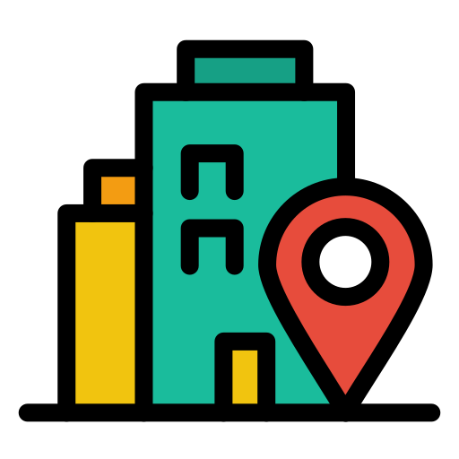
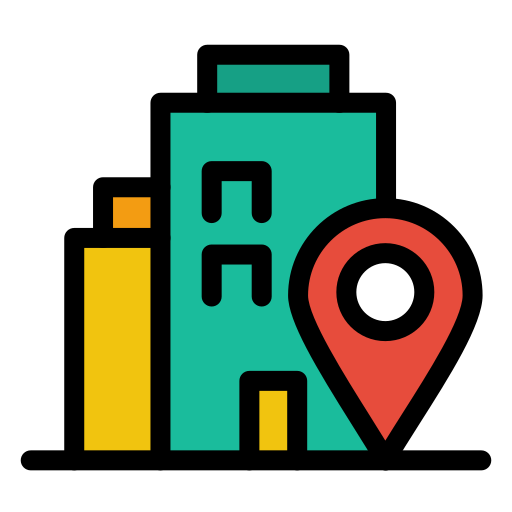

Filip Czarnecki
QA Specialist
Witam, aktualnie studiuje programowanie gier tak aby
jeszcze lepiej zrozumieć testowanie i pracę z zespołem
programistów, designerów tak aby przepływ informacji oraz
zgłaszane bugi były doskonale rozumiane przez cały zespół.
Testuję gry już 5 lat i aktualnie chciałbym rozwiać się w
kierunku QA Seniora/ Associate Lead.
Edukacja
Informatyka - Front-End 2025r
Języki
Angielski C1 (Zaawansowany)
Polski Ojczysty

 797502814

Bagno 5 Warszawa 00-112
797502814

Bagno 5 Warszawa 00-112
 Filipczarnecki.k@gmail.com
Filipczarnecki.k@gmail.com
 LinkedIn
LinkedIn
 Upwork
Upwork